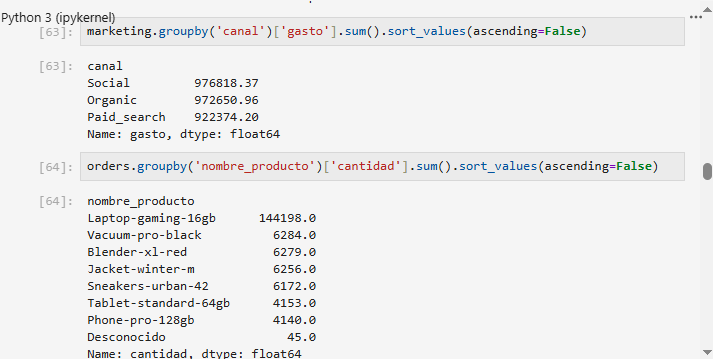
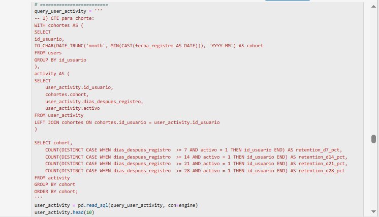
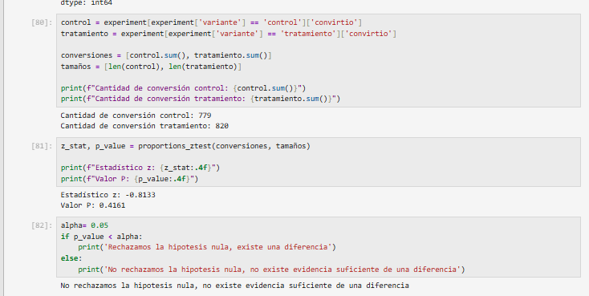
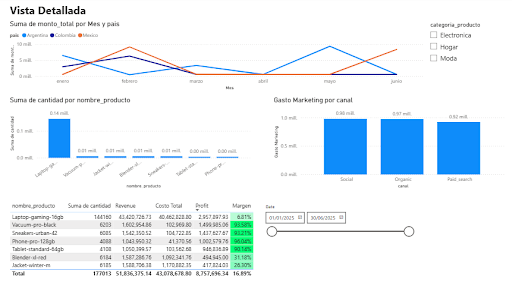

Objetivo
RappiPlus es un servicio de suscripción dentro del ecosistema de Rappi, diseñado para aumentar la frecuencia de compra y el valor generado por usuario. El equipo de negocio no tenía claridad sobre si el servicio cumplía ese objetivo: no sabía si los datos disponibles eran confiables, si el modelo era rentable, en qué punto del proceso de compra se perdían usuarios, si los usuarios regresaban a la plataforma y si un cambio reciente en el producto había tenido impacto real.
El objetivo fue transformar datos de pedidos, catálogo, marketing y comportamiento de usuario en respuestas concretas a esas preguntas, y comunicar los resultados en un dashboard que el negocio pudiera usar para tomar decisiones. El análisis se organizó en seis etapas: calidad de los datos, rentabilidad, embudo de conversión, retención de usuarios, impacto de un experimento y comunicación de resultados mediante un dashboard.
Fuentes de datos
- Pedidos — 25,100 registros (24,600 tras la limpieza).
- Catálogo de productos — costo e información de cada producto.
- Gasto de marketing — inversión por canal y campaña.
- Base de datos PostgreSQL — tablas de eventos y usuarios, consultadas vía SQLAlchemy.
Herramientas usadas
Python
Pandas
NumPy
SQL (PostgreSQL)
Statsmodels
Power BI
Jupyter Notebook
Proceso / metodología
- 1. Calidad de datos: conversión de fechas, revisión de nulos, eliminación de duplicados, estandarización de texto y verificación cruzada del monto de cada pedido (cantidad × precio − descuento).
-
2. Rentabilidad: cálculo de indicadores financieros combinando pedidos con el costo unitario del catálogo.

- 3. Embudo de conversión: conteo de usuarios únicos por etapa directamente sobre la tabla de eventos con SQL.
-
4. Retención por cohortes: usuarios agrupados por mes de registro, midiendo actividad a los 7, 14, 21 y 28 días.

-
5. Test A/B: prueba de dos proporciones (z-test, 5% de significancia) sobre un cambio en la interfaz de checkout.

-
6. Dashboard: construcción de un dashboard de dos vistas en Power BI para comunicar resultados a audiencias no técnicas.

Resultados clave
- Calidad de datos: tras eliminar 400 duplicados y filas incompletas, el dataset quedó en 24,600 registros limpios y consistentes.
- Rentabilidad: revenue de 51,966,982, costo de 43,124,069, inversión en marketing de 2,871,844 y profit de 8,842,913 (~17% de margen). Ticket promedio de 2,083 con 7.1 productos por orden. El producto Laptop-Gaming-16GB concentra la mayor parte del volumen, lo que representa un riesgo de concentración.
- Embudo de conversión: 95.4% agrega un producto al carrito, 94.8% selecciona un producto, 90.2% inicia el checkout y solo 78.1% llega a ingresar su información de pago — la mayor caída (~12 puntos) ocurre justo antes del pago.
- Retención por cohortes: patrón estable entre cohortes: 85%–87% activo a los 7 días, 78%–80% a los 14 días, 63%–65% a los 21 días y ~40% a los 28 días.
- Test A/B: conversión de 15.7% en control (4,965 usuarios) vs. 16.3% con el nuevo checkout (5,035 usuarios); z = −0.81, p = 0.42 → no hay evidencia estadística de un impacto real.
- Dashboard: dos vistas en Power BI (Overview y Detallada) con KPIs, distribución por categoría/país/canal, evolución mensual y una tabla de margen por producto — pensado para que el negocio lo use sin depender de un analista.
Conclusiones y recomendaciones
- Priorizar mejoras en el flujo de pago para reducir la caída en esa etapa del embudo.
- Diseñar campañas de reactivación dirigidas a usuarios que se acercan al día 28 sin actividad.
- Diversificar el catálogo o el enfoque comercial para reducir la dependencia de un solo producto de alto volumen y bajo margen.
- Si se repite el test del checkout, diseñar variantes con un efecto esperado más marcado o ampliar el tamaño de muestra.
Repositorio / dataset
→ Descargar el notebook completo (.ipynb)